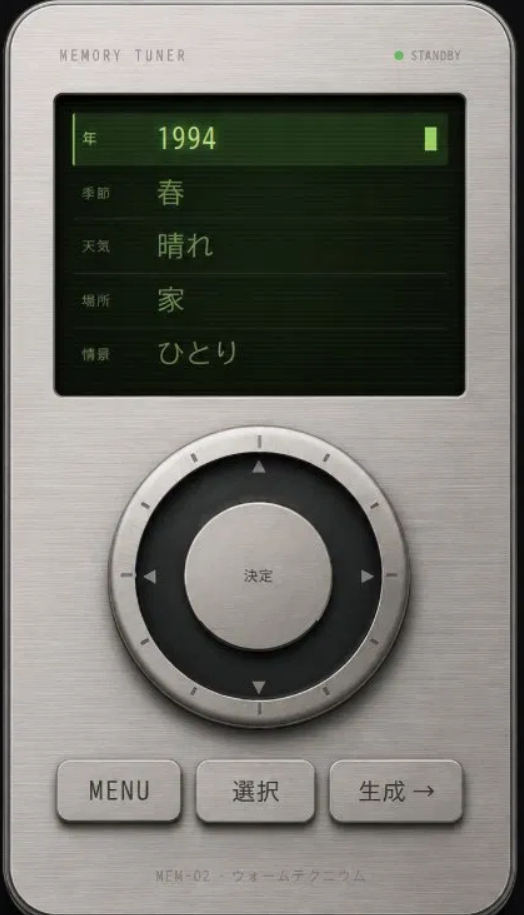

MEMORY TUNER — 参照PNG 左右同一マウント確認
現在は左右とも同一ファイル・同一クラス構成のみです。
表示サイズ・縦横比・パネル外周のシャドウ条件が論理的に対称かを見てください。
次フェーズとして、ここより右のみを HTML/CSS で段階置換する想定です（今はしない）。

プレビューを開く：
c:\work\retro-music-app\_design\previews\memory_tuner_ios_portrait_preview_v1.html